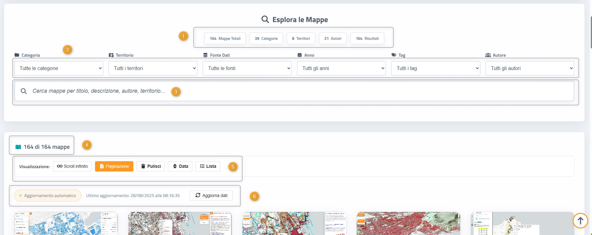
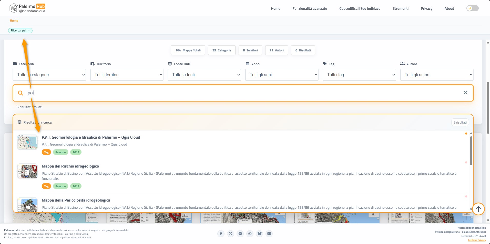
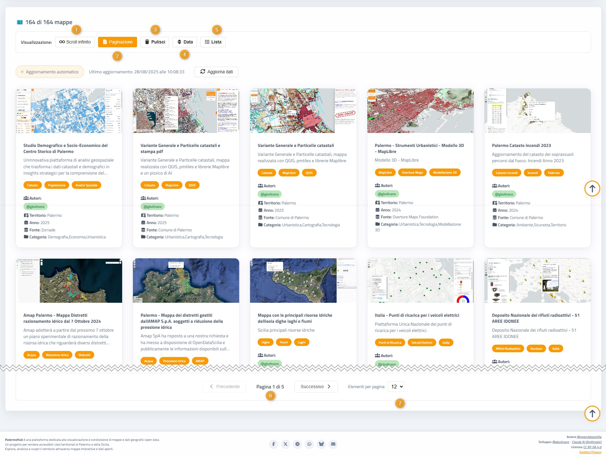
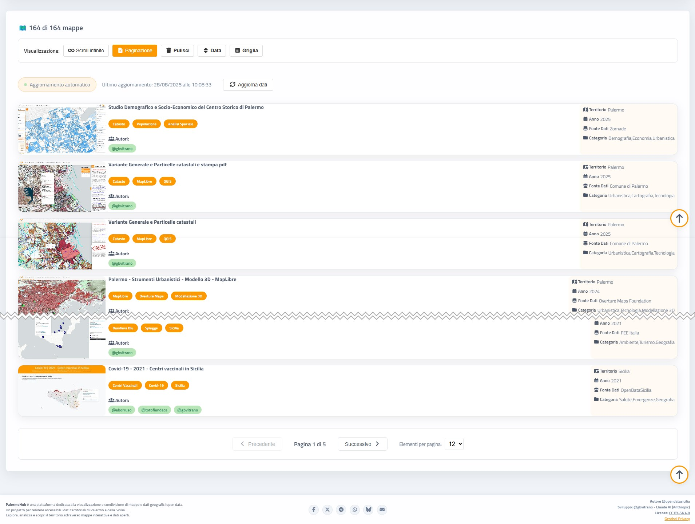
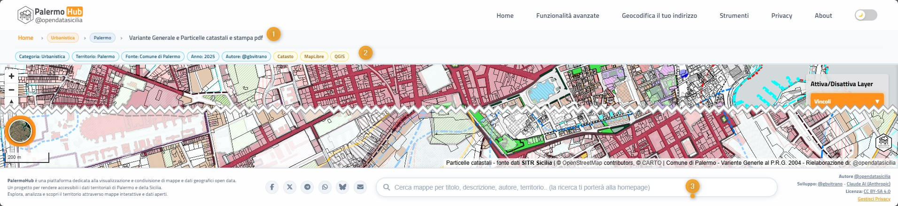

Struttura della piattaforma
PalermoHub si presenta come una piattaforma web per esplorare mappe territoriali di Palermo, organizzata con diversi elementi funzionali per garantire un'esperienza utente completa e intuitiva.
Sezioni principali
- Esplora le Mappe: sezione principale per la navigazione attraverso le diverse mappe disponibili
- Contatori dinamici: dashboard che mostra statistiche in tempo reale su numero totale di mappe, categorie disponibili, territori coperti e autori coinvolti

- Statistiche;
- Selettori filtri, per Categoria, Territorio, Fonte dati, anno, tag e autore/i delle mappe;
- Ricerca intelligente (Smart search)trova le mappe specifiche attraverso parole chiave
- Interfaccia che mostra il numero di risultati trovati con indicazioni chiave;
- Strumenti per la visualizzazione e la navigazione nell'elenco delle mappe:
- Indicazione dell'ultimo aggiornamento
Sistema di ricerca e filtri
- Barra di ricerca: strumento per trovare mappe specifiche attraverso parole chiave
- Sistema di risultati: interfaccia che mostra il numero di risultati trovati con indicazioni chiare Esempio di Smart search
- Paginazione: sistema per navigare agevolmente tra i risultati quando sono numerosi Tipi di visualizzazioni
- Visualizzazione scroll infinito;
- Visualizzazione a pagine;
- Reset filtri usati
- Ordina per data;
- Layout: Griglia/Lista;
- Navigazione: numerazione pagine e pulsanti:
- Selettore per il numero di mappe da caricare per pagina.
- Aggiornamento automatico: i dati vengono aggiornati automaticamente per garantire informazioni sempre attuali
- Timestamp: indicazione dell'ultimo aggiornamento per trasparenza sui dati
- Caricamento asincrono: le mappe vengono caricate dinamicamente per ottimizzare le prestazioni Breadcrumbs e funzione cerca
- Breadcrumbs, mostra il percorso gerarchico della pagina in cui si trova;
- Sistema di navigazione e classificazione delle mappe con Breadcrumbs
- Barra di ricerca intelligente sincronizzata con la home page. Permette di cercare per titolo, descrizione, autore e altri criteri. La ricerca restituisce risultati direttamente nella home page, mostrando le mappe che corrispondono ai criteri di ricerca selezionati.



Funzionalità dinamiche

Ogni mappa nella piattaforma è classificata secondo criteri specifici (categoria, difficoltà, autore, tag, ecc.) che ne determinano la raggiungibilità attraverso diversi percorsi di navigazione.
Breadcrumbs intelligente: Nella barra di navigazione (breadcrumbs) vengono visualizzati tutti i filtri applicati che hanno portato alla mappa corrente. Ogni elemento del percorso rappresenta un criterio di classificazione specifico.
Navigazione interattiva: Cliccando su qualsiasi filtro nella sequenza dei breadcrumbs, l'utente accede immediatamente all'elenco completo delle mappe che corrispondono a quel particolare criterio di filtraggio. Questo permette di esplorare facilmente mappe correlate o alternative senza dover tornare indietro nel percorso di navigazione.
Come può essere utilizzato
Per cittadini e residenti
- Esplorare il territorio: navigare Palermo attraverso diverse prospettive cartografiche per una comprensione completa della città
- Trovare informazioni specifiche: localizzare quartieri, servizi pubblici, infrastrutture e punti di interesse
- Visualizzare dati territoriali: accedere a informazioni geografiche in modo intuitivo e interattivo
Per ricercatori e studiosi
- Accesso organizzato: consultare datasets cartografici multipli in un unico punto di accesso
- Confronto tra rappresentazioni: analizzare diverse rappresentazioni del territorio palermitano per studi comparativi
- Ricerca tematica: filtrare per categorie specifiche di interesse per ricerche mirate
Per amministrazione pubblica
- Consultazione integrata: accedere a mappe da diverse fonti in un'interfaccia unificata
- Supporto decisionale: utilizzare visualizzazioni territoriali per decisioni informate
- Condivisione di dati: facilitare la trasparenza e l'accesso ai dati con cittadini e stakeholder
Per sviluppatori e data analyst
- Hub centralizzato: punto di riferimento per mappe e dati geografici relativi a Palermo
- Accesso programmatico: possibile integrazione con altri sistemi e applicazioni
- Riferimento per progetti: base dati per progetti che necessitano di informazioni territoriali palermitane
Conclusioni
Valore strategico della piattaforma
PalermoHub rappresenta un modello innovativo di democrazia digitale territoriale. Non è semplicemente un portale di mappe, ma un ecosistema informativo che democratizza l'accesso ai dati geografici della città, trasformando informazioni spesso frammentate in conoscenza accessibile e utilizzabile.
Punti di forza identificati
- Approccio multistakeholder: La piattaforma è progettata per servire efficacemente cittadini, ricercatori, amministrazione pubblica e sviluppatori, dimostrando una visione inclusiva della governance urbana digitale
- Architettura scalabile: L'aggiornamento automatico, il caricamento asincrono e la paginazione indicano una progettazione tecnica solida, preparata per gestire volumi crescenti di dati e utenti
- Trasparenza operativa: La visualizzazione dei timestamp degli aggiornamenti e dei contatori in tempo reale evidenzia un impegno verso la trasparenza e l'accountability
Potenziale di impatto
- Per la partecipazione civica: PalermoHub può fungere da catalizzatore per una cittadinanza più informata e partecipativa, fornendo gli strumenti conoscitivi necessari per un engagement territoriale consapevole
- Per l'innovazione urbana: La centralizzazione e standardizzazione dei dati geografici può accelerare lo sviluppo di soluzioni innovative per le sfide urbane di Palermo
- Per la ricerca e l'accademia: La piattaforma può diventare un riferimento per studi urbani, geografici e sociologici sul territorio palermitano
Considerazioni critiche
- Dipendenza dalla qualità dei dati: L'efficacia della piattaforma dipende intrinsecamente dalla qualità, completezza e aggiornamento costante dei dataset sottostanti
- Necessità di governance: Il successo a lungo termine richiederà protocolli chiari per la gestione, validazione e aggiornamento dei contenuti
- Digital divide: L'utilità della piattaforma potrebbe essere limitata per quei segmenti di popolazione con minore alfabetizzazione digitale
Visione d'insieme
🎯 Obiettivo
Trasformare la tecnologia in strumento di trasparenza, partecipazione e sviluppo territoriale sostenibile
📊 Misurazione del successo
Capacità di trasformare i dati in decisioni e la conoscenza geografica in azioni concrete
🏙️ Impatto finale
Miglioramento della qualità della vita urbana attraverso una governance più informata e partecipativa